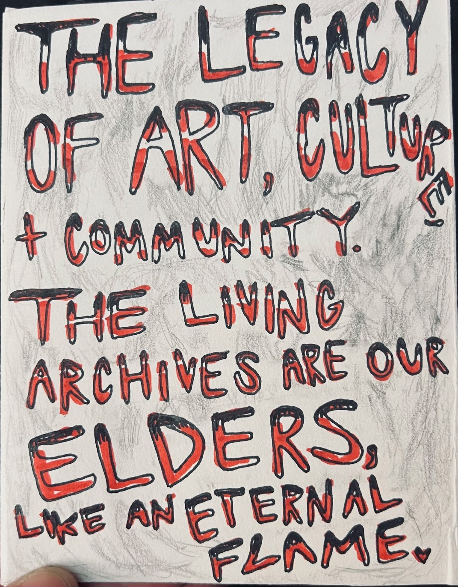
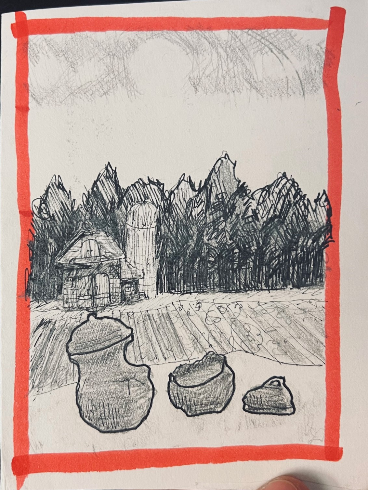
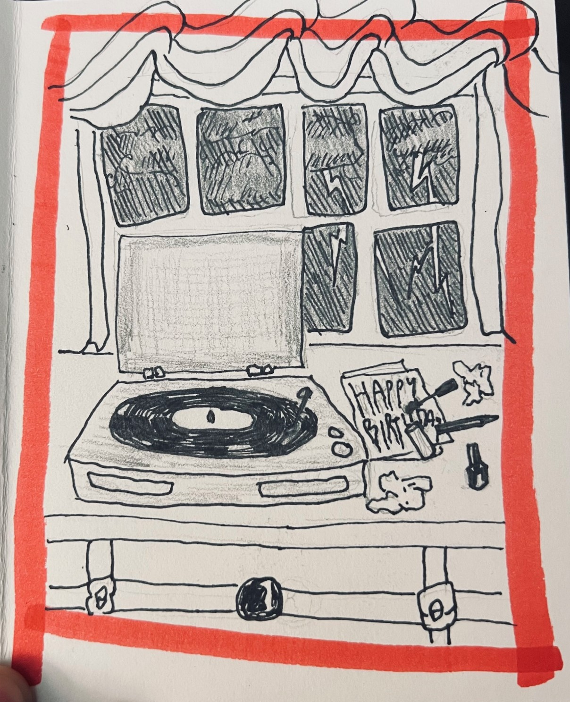
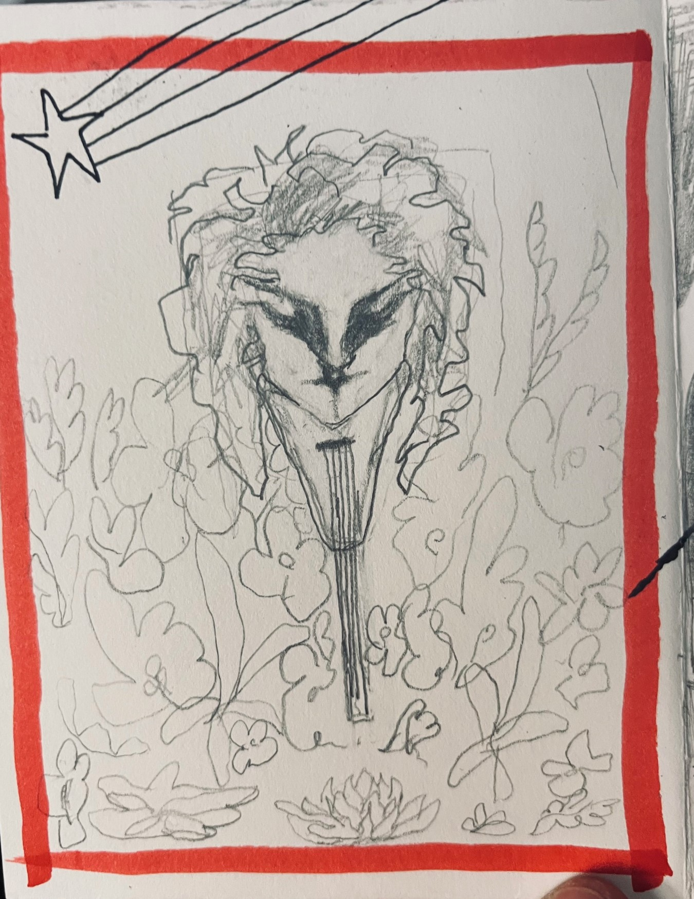
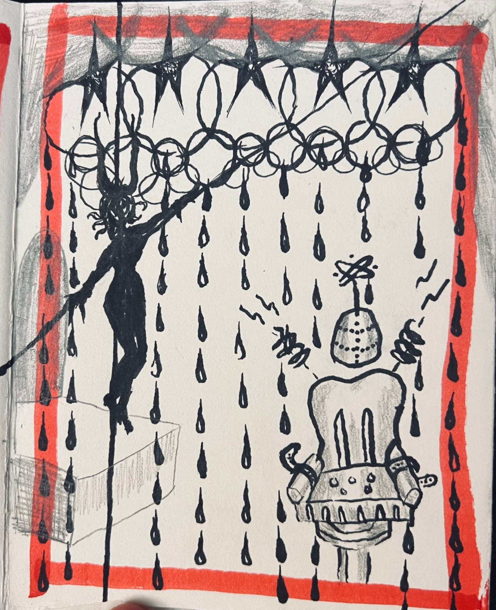
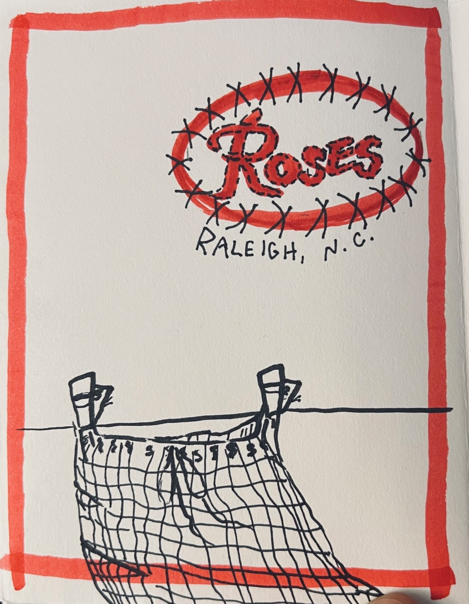
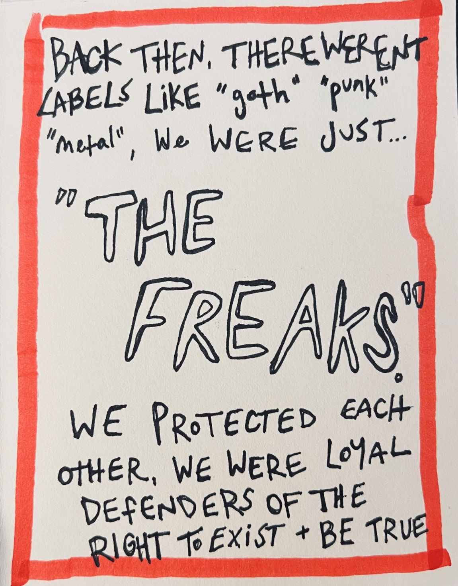
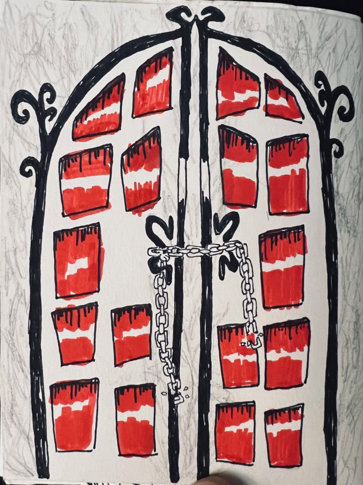

Welcome to The Iluminarium, a hub for learning and creativity.
Our mission is to provide a platform for knowledge and art, along with the necessary tools to create your own informative artwork. I established this platform out of my passion for learning and fostering connections. Each of us brings unique experiences, backgrounds, and insights that contribute to our personal growth and exploration. I am also a strong advocate for self-sufficiency and practical life skills.
In recognition of the fact that higher education may not be accessible to everyone, I believe that self-discovery and personal growth can come from pursuing knowledge in various forms. At Iluminarium, we have removed barriers to accessing a wide range of subjects, including science, engineering, politics, spirituality, history, art, humanities, diversity and inclusion, and much more. You can find an index of subjects on the Topics page.
We welcome contributions from our visitors as well. For information on how to share your work, please refer to our FAQ & Submissions page. While our primary format is zines, we also accept 2-dimensional works in digital format for consideration. If you are unfamiliar with zine-making, you can find a tutorial on our Mediums page.
Thank you for taking the time to explore our website. We encourage you to delve into the wealth of resources available and enjoy your experience at Iluminarium.
"Elder Interview with Shanna Williams (2024)" by Laura Bray







